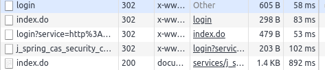

本文介绍了我是如何找到一个 BUG 的。
首先要说一句，自我工作以来，我已经很久没有发布过新的技术博客了。并不是因为没有东西可以分享或者太忙，而是越来越发现自己才疏学浅，实在不敢将自己对某门技术浅薄的认知发布在网上。
不过有错误才有进步，之后还是要多写博客才是。
开发环境
- Ubuntu 18.04
- Python 3.6.7
- VSCode
背景
这几天我写了一个爬虫项目 SDUT_RESTful_API，其特点为通过全异步的 WEB 端与爬虫后端来实现高并发。WEB 端使用了异步框架 Sanic，爬虫端则使用了异步网络请求库 aiohttp。
发现问题
因为有多个网站可以通过山东理工大学统一登录平台登录，因此我首先尝试写一个模拟登录统一登录平台的爬虫：
1 | import aiohttp |
如果通过了登录的话，那么后续的查询应该是可以使用的。但在实际使用中，却发现后续的查询无法使用。经过输出调试，发现没有登录成功。
考虑反爬虫
最开始考虑是不是触发对方的反爬虫策略了，从 Chrome Network 中找到这条请求，Copy as cUrl 来模拟请求一下：
1 | curl 'http://authserver.sdut.edu.cn/authserver/login' -H 'Connection: keep-alive' -H 'Cache-Control: max-age=0' -H 'Origin: http://authserver.sdut.edu.cn' -H 'Upgrade-Insecure-Requests: 1' -H 'Content-Type: application/x-www-form-urlencoded' -H 'User-Agent: Mozilla/5.0 (X11; Linux x86_64) AppleWebKit/537.36 (KHTML, like Gecko) Chrome/71.0.3578.98 Safari/537.36' -H 'Accept: text/html,application/xhtml+xml,application/xml;q=0.9,image/webp,image/apng,*/*;q=0.8' -H 'Referer: http://authserver.sdut.edu.cn/authserver/login' -H 'Accept-Encoding: gzip, deflate' -H 'Accept-Language: zh-CN,zh;q=0.9,en;q=0.8' -H 'Cookie: route=<route>; JSESSIONID_auth=<JSESSIONID_auth>' --data 'username=<username>&password=<password><=<lt>&dllt=userNamePasswordLogin&execution=e1s1&_eventId=submit&rmShown=1' --compressed |
最常见的反爬虫一般会验证 header 中的数据，比如 User-Agent 和 Referer，cUrl 可以发送一条和浏览器相同的请求，可以使用 cUrl 来试探出对方到底对哪些字段进行了验证。
依次删除 header 中的字段，直到已经只剩下要发送的数据了，却还是能够正常获得返回。
1 | curl 'http://authserver.sdut.edu.cn/authserver/login' --data 'username=<username>&password=<password><=<lt>&dllt=userNamePasswordLogin&execution=e1s1&_eventId=submit&rmShown=1' |
说明其实网站没有对 header 进行验证，所以爬虫无效并不是触发了反爬虫。
考虑机器人验证
既然没有被反爬虫干掉，那么为什么没有成功登录呢？分析登录的过程，发现一个登录流程有四次 302 重定向：

中间会重定向到一个 /authserver/services/j_spring_cas_security_check 页面，从地址上来分析，这个页面应该做了一些安全验证，那么会不会是在这个页面被检测到爬虫，然后被拒绝了呢？
因为涉及到多次重定向，每次都模拟一遍很麻烦，因此我们去 aiohttp 源码中输出一下中间值，以确定到底是哪里出了问题。
使用编辑器的追踪功能，我找到了 aiohttp 处理 post 请求的地方（client.py）：
1 | def post(self, url: StrOrURL, |
再次追入 self._request 函数，最终定位到实际处理重定向的位置（client.py），在此处输出一下调试用的信息，从而确定到底是哪次请求出错了。
因为登录状态是用 Cookie 保持的，Cookie 是 Response 中 header 的 Set-Cookie 设置的，因此需要输出的就有以下几项：
Cookieheaderurl，用以确定是哪次请求
修改后的代码是这样的：
1 | self._cookie_jar.update_cookies(resp.cookies, resp.url) |
然后再次发起请求，观察输出结果：
1 | url: http://authserver.sdut.edu.cn/authserver/login |
然后可以发现，第一个请求就有问题：有一个 Set-Cookie 没有被正确的响应。我们找出没有被响应的 Set-Cookie：
1 | Set-Cookie: CASTGC=TGT-15-6GMEwIOVCygEdEFdIqMesWfznAOnu4wVpUJcGYToswV0MBbbbc1548761299811-XU6e-cas;Path=/authserver/;HttpOnly;Max-Age=604800;Expires=Tue,5 Feb 2019 11:28:00 GMT; |
简化问题
我现在找到了出现问题的地方，我可以解决它，只要我把它手动添加到 Cookie 中就完事儿了，但我想知道为什么会出现这个 BUG。
因为我要爬取的网站有登录限制，过多的登录会导致账号暂时不可用。为了能够稳定的重现 BUG 并调试它，我用 Flask 写了一个短小的发送同样响应的 Web 站点：
1 | from flask import Flask, make_response |
然后创建了一段爬虫代码来调试：
1 | async with aiohttp.ClientSession() as session: |
我不断的删除 Set-Cookie 中的字符，从而测试到底是哪里导致了问题的出现。最终我得到了一个最小的问题复现：
1 | resp.headers['Set-Cookie'] = 'Hello=World; Expires=Thu,31 Jan 2019 05:56:00 GMT;' |
我尝试用 cUrl 和 Requests 来解析这段数据，都可以正常的获得响应，只有 aiohttp 不可以。这时候我发现这段字符串的格式有点问题：
这是 MDN 中说明的 Expires 格式：<day-name>, <day> <month> <year> <hour>:<minute>:<second> GMT。
按照 MDN 的格式，Thu, 后面和 31 前面少了一个空格，我添加了这个空格后， aiohttp 果然能够正常的解析这段字符串了。
看起来问题到此结束了： aiohttp 没有对不规范的 Expires 做解析。但经我测试，JavaScript、PHP 都可以正常解析没有空格的数据，同为 Python 库的 Requests 也可以。或许兼容这种写法才是正常的？
找到问题代码
是什么导致了同为 Python 语言的两个库行为不同的？我继续追踪代码，找到了 aiohttp 为 session 设置 cookie 的地方（cookiejar.py）：
1 | for name, cookie in cookies: |
设置 cookie 实际上是由这个 SimpleCookie 类来完成的，再想往里追的时候发现编辑器无法跳转了，仔细一看，这个类是 Python 内置的类。
于是乎我找到了 Python 在 GitHub 上的库，找到了实际运行的代码 cookies.py。这个文件挺短的，代码量也不多，很容易就找到了实际出问题的代码：一段正则表达式。
向官方提交 BUG
我向 Python Bugs 社区提交了这个 BUG：bpo-37522。
最终解决问题
转回我自己的问题，我最后是如何解决的呢？
就像我在简化问题节第一句说的那样，我手动处理了这个 Set-Cookie（auth_server.py）：
1 | # 第一次请求禁止重定向，自行处理 |
当然，我在分析到简化问题节的时候就已经可以解决这个问题了，但如果就这样解决了问题跑路的话，后面的乐趣岂不是全都失去了？
经过推断、分析、查找和测试后终于解决了一个问题，这是爬虫的乐趣，应该也是其他技术的乐趣吧。